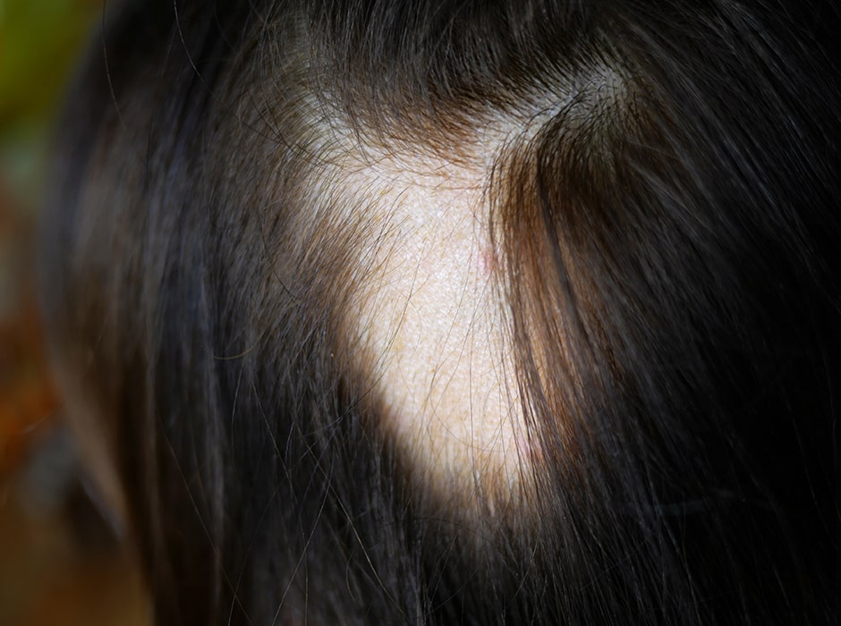
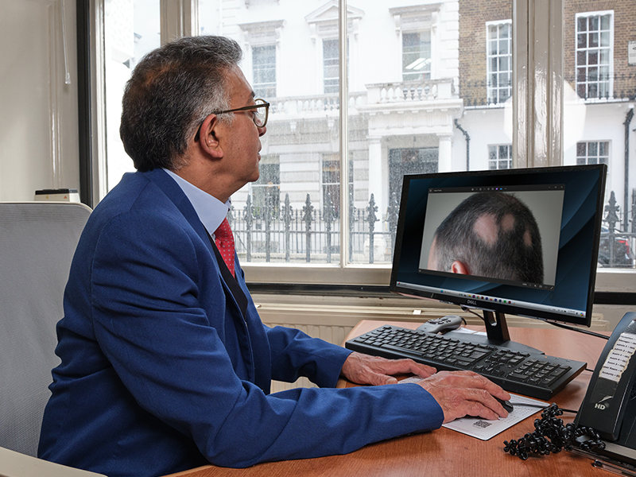
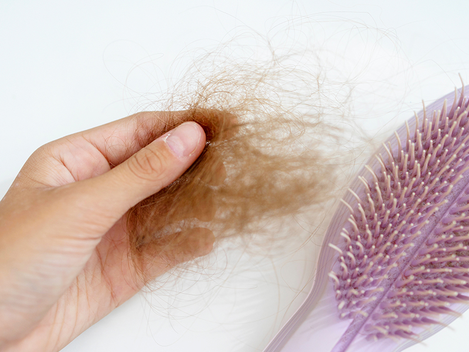
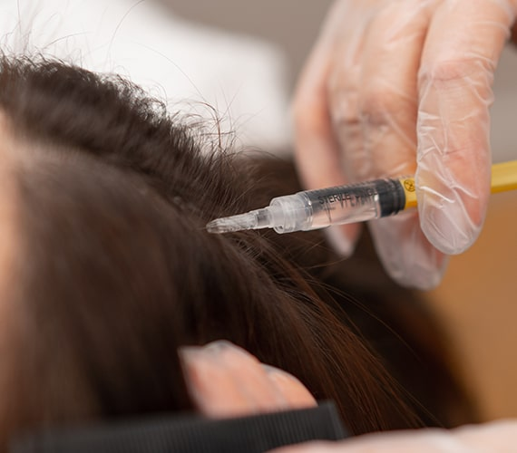
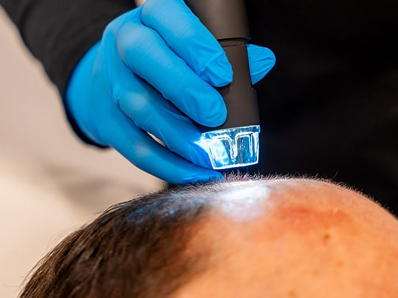
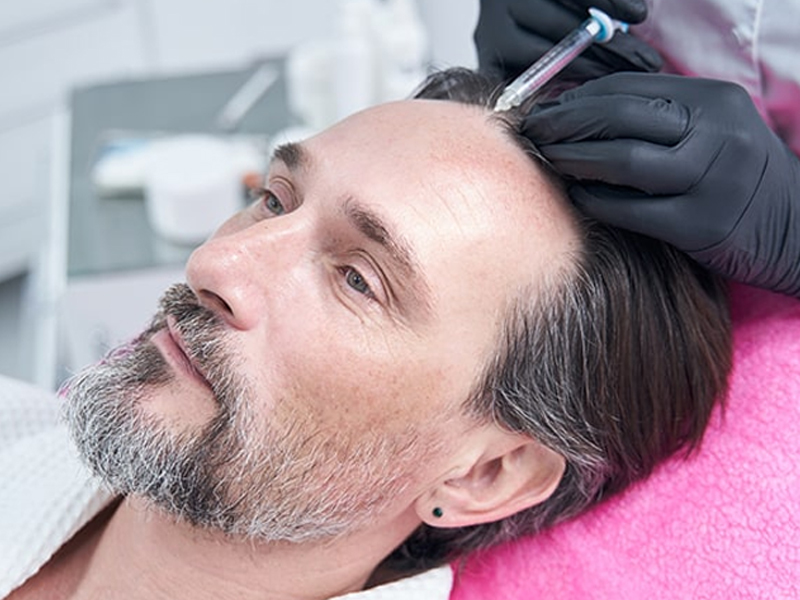

Need Help with Alopecia?
Our alopecia clinic in London is led by dermatologists who are leading experts in treating the condition. Complete the form or call us on 020 7467 3720 to learn more about how we can help with your alopecia.


Alopecia areata causes patchy hair loss, typically on the scalp. While it’s not physically harmful, it can have a significant psychological impact. If you or your child is affected, our private dermatology clinic in London is here to help. Under the expertise of Dr Sunil Chopra, we offer personalised treatments to manage and address alopecia areata. Our goal is to restore both your hair and confidence with effective, tailored care. Contact us today to explore our alopecia treatment options and find the support you need.

Alopecia areata is an autoimmune condition where the immune system attacks hair follicles, causing hair loss. This disorder can affect people of any age, leading to patchy bald spots on the scalp, beard, and eyebrows. While hair may naturally regrow over time, this process can take several months and, in some cases, hair loss might be permanent. A dermatologist can diagnose and treat alopecia areata, providing therapies to encourage hair growth and manage the condition. For more details on alopecia areata, its causes, and treatment options, contact our dermatology clinic today.

Alopecia areata occurs when the immune system erroneously attacks hair follicles, leading to hair loss. This condition typically results in clumps of hair falling out, leaving bald patches on the scalp. In some instances, the hair grows and then breaks off, leaving short, uneven strands. While alopecia areata primarily affects the scalp, it can sometimes cause hair loss on other parts of the body, such as the eyebrows, eyelashes, and beard.

The exact cause of alopecia areata remains unclear, but it has been linked to other autoimmune disorders such as diabetes, thyroid disorders, and vitiligo. Additionally, stress has been identified as a potential trigger for this condition. The relationship between stress and alopecia areata is complex, as stress can exacerbate the symptoms, but the condition itself can also contribute to increased stress and emotional strain. Understanding the underlying factors and managing stress levels can be crucial in handling the condition effectively. For comprehensive treatment and management, consulting with an experienced dermatologist is highly recommended.

At our dermatology clinic, we provide a comprehensive range of treatments for alopecia areata, tailored to the specific needs and preferences of each patient. The treatment plan will depend on the extent and nature of your hair loss, your overall health, and your personal preferences. Our goal is to offer you the most effective options, which may include topical treatments, oral medications, or advanced therapies such as corticosteroid injections and light therapy. You will have the opportunity to discuss each available treatment with one of our experienced consultant dermatologists. During the consultation, the dermatologist will explain the potential benefits and side effects of each option, allowing you to make an informed decision about your preferred course of treatment.

For those experiencing limited hair loss, intralesional steroid injections can be a beneficial treatment option. This approach involves injecting corticosteroids directly into the affected areas of the scalp to stimulate hair regrowth. By reducing inflammation around the hair follicles, these injections promote faster hair growth and improve the appearance of bald patches. Treatments are typically administered every four to six weeks, depending on individual response and progress. During each session, the dermatologist carefully targets the areas most in need, providing a focused treatment that can lead to noticeable improvements over time. Discussing the benefits and potential side effects with your dermatologist will help ensure this treatment aligns with your hair restoration goals.
For cases of more severe alopecia areata, we may recommend oral steroids to expedite hair regrowth. These medications work by suppressing the immune system's attack on hair follicles, thereby reducing inflammation and promoting hair regrowth. Oral steroids can be particularly effective in cases where hair loss is extensive and rapid intervention is needed.
Treatment with oral steroids typically involves taking the medication daily over a specified period, as determined by your dermatologist. It's essential to follow the prescribed regimen and attend regular follow-up appointments to monitor progress and manage any potential side effects. While oral steroids can significantly speed up hair regrowth, they are usually considered when other treatments have not been sufficiently effective or when quick results are necessary.

For severe cases of alopecia areata where steroids might not be as effective, topical immunotherapy can be a highly beneficial alternative. This treatment involves applying chemicals directly to the scalp to provoke an allergic reaction. The resulting mild inflammation stimulates hair follicles and encourages hair growth. Regular sessions over several months can lead to significant improvement in hair density and coverage. Phototherapy, another effective treatment option, uses ultraviolet B (UVB) light to stimulate hair growth.

This method involves exposing the scalp to controlled UVB light, which can enhance the production of new hair cells. Phototherapy sessions are typically scheduled multiple times a week, and consistent treatment can lead to noticeable hair regrowth. Combining these therapies with regular dermatological consultations ensures a comprehensive approach to managing and improving severe alopecia areata.

Dithranol cream is another treatment option for stimulating hair growth in areas affected by alopecia areata. One of our dermatologists in London can prescribe this cream, which you can apply directly to the bald patches to encourage regrowth. Additionally, there are various steroid creams available, and we will discuss the most suitable options with you during your consultation. Experiencing hair loss can be extremely distressing and have a significant impact on your quality of life. However, effective treatment with our professional team can make a substantial difference. Schedule an appointment today to discuss your treatment options for alopecia areata and start your journey towards improved hair health.

Platelet-Rich Plasma (PRP) therapy is an advanced treatment designed to combat hair loss by using the patient’s own blood platelets, which are rich in growth factors. This therapy is highly effective for those experiencing thinning hair or moderate hair loss, with around 30-40% of patients seeing significant improvement.

PRP works by stimulating the stem cells within hair follicles, promoting natural hair regrowth. The treatment process involves drawing a small amount of blood, which is then processed to separate the platelets. These concentrated platelets are injected into the scalp areas affected by hair loss. The entire procedure typically lasts about 20-30 minutes. Most treatment plans consist of three sessions, spaced a month apart, with additional sessions considered based on the severity of hair loss. Annual maintenance treatments help sustain the benefits. During your consultation, a personalised treatment plan will be developed to address your specific needs.
Yes, you can book directly with one of our dermatologists even if you’re unsure whether your hair loss is due to alopecia. We’ll carry out a full assessment and confirm the type and cause of hair loss.
We manage all types of alopecia, including alopecia areata, androgenetic alopecia, frontal fibrosing alopecia, and scarring alopecias. Each diagnosis is followed by a tailored treatment plan to suit the specific condition.
Not always – many forms of alopecia can be diagnosed through examination and history alone. A biopsy may be recommended in more complex or unclear cases to ensure accuracy.
Yes, we frequently treat patients with alopecia areata, including patchy, total and universal types. Treatment options are selected based on severity and response to any previous therapies.
Yes, our consultants have experience diagnosing and treating scarring alopecias such as lichen planopilaris and discoid lupus. Early intervention is key to prevent further follicle damage.
Absolutely – we often see patients with treatment-resistant alopecia. Our clinic offers a range of advanced options, including combination therapies and off-label treatments where appropriate.
The earlier you seek advice, the better the chances of slowing progression and preserving hair. Prompt assessment also helps in choosing the most effective treatment approach for your type of alopecia.
In many cases, yes – regrowth is possible, especially with early treatment. Success depends on the type of alopecia and how well it responds to therapy.
If you need private treatment for alopecia in London, our clinic is ideally situated at 69 Wimpole Street. The nearest underground stations, Bond Street and Baker Street, are just a few minutes' walk away, making access convenient. Additionally, street parking is readily available for those who prefer to drive.
Monday - Friday: 9.00 AM - 5.30 PM
Saturday & Sunday: Closed
69 Wimpole Street,
London W1G 8AS.
Our alopecia clinic in London is led by dermatologists who are leading experts in treating the condition. Complete the form or call us on 020 7467 3720 to learn more about how we can help with your alopecia.